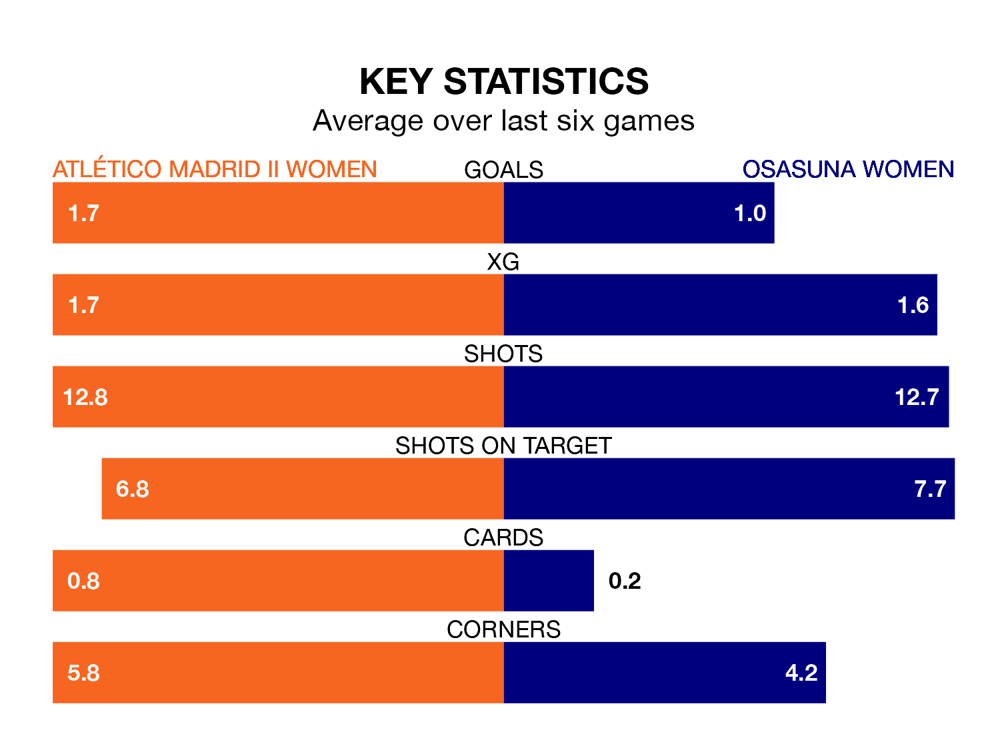

Atlético Madrid II Women host Osasuna Women on Saturday in the Primera Federación Femenina.
In their last league match, on Sunday, Atlético Madrid II drew with Barcelona II Women 1-1 away.
Osasuna won, 1-0 at home against AEM Lleida Women.
With 19 goals in 18 games so far this season, Osasuna are scoring at below the league average rate with 1.1 goals per game. But they are conceding fewer than average too, letting in 17 goals at a rate of 0.9 per game.
Atlético Madrid II, meanwhile, are above average scorers, with 1.3 goals per game, compared to a league average of 1.2. They have conceded 1.2 goals per game.
The hosts are ninth in the table after 18 games, of which they have won six and drawn five, earning 23 points.
The away side are three places ahead of Atlético Madrid II in sixth, with seven wins and six draws putting them on 27 points.
Atlético Madrid II are in mixed form in the Primera Federación Femenina, with two wins and two draws from their last six games.
And also with two wins and two draws over that period, Osasuna's form is identical – they have both taken eight points from 18.
Updated: 13:04 (UTC), 16/02/24